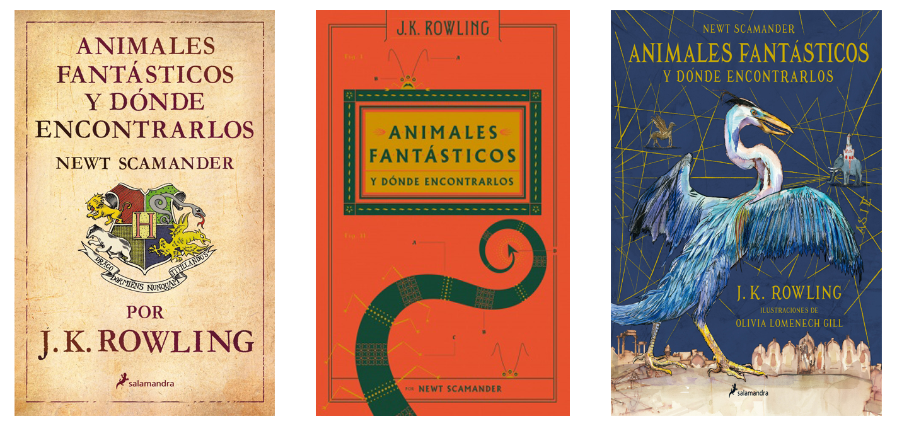

¿Está basada en algún libro?
A pesar de lo que los Muggles (también conocidos como No-Mags en esta saga) puedan creer, estas nuevas películas no están basadas en ningún libro. Sin embargo, esta confusión tiene su fundamento.
Animales fantásticos y dónde encontrarlos (título original en inglés: Fantastic Beasts and Where to Find Them) es un libro de 2001 escrito por la autora británica J. K. Rowling, a pesar de que en su portada aparece el nombre de Newt Scamander, que habla sobre las criaturas mágicas de Harry Potter. Teniendo la primera película de la nueva pentalogía el mismo nombre es lógico que los espectadores crean que de un libro de apenas 100 páginas vaya a ser adaptado a la gran pantalla con mucha imaginación cuando, en realidad, la historia que vemos en las películas muestra las aventuras que vive el autor mientras escribe su bestiario.
¿Qué sabemos de la tercera entrega?
El rodaje de la tercera película de Animales Fantásticos se vio obligado a posponer su fecha de inicio debido a la Pandemia causada por el COVID-19. Afortunadamente, ya han recibido luz verde para reunirse en el set con la esperanza de que podamos ver lo antes posible a nuestros personajes y criaturas favoritas en la gran pantalla. Hasta entonces podemos disfrutar de las dos entregas anteriores para recordar el rol que interpretan, entre otros, Eddie Redmayne (Newt Scamander) y Johnny Depp (Gellert Grindelwald).